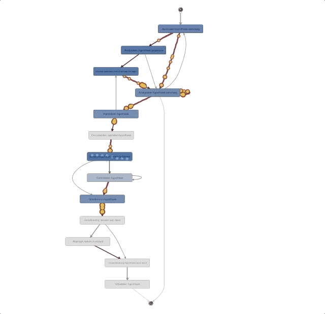
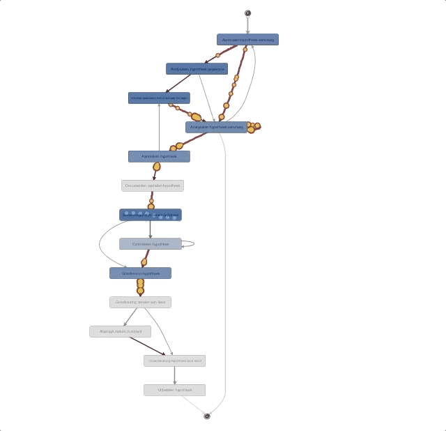
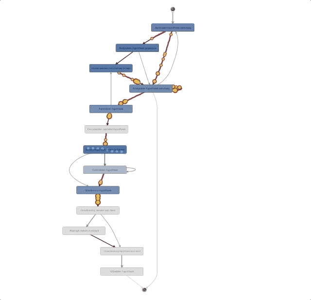

Exemplos
 

Uma técnica para poder analisar e monitorar processos. Conseguindo identificar pontos críticos e gargalos.
Process Mining, ou mineração de processos, é uma técnica que tem como principal objetivo analisar, identificar, monitorar e melhorar processos, extraindo informações para poder aplicar
- Processos mais eficientes
- Melhoria contínua dos processos
- Redução de custos operacionais
- Visão de futuro
Capturando os dados e transformando em logs de eventos, ele consegue gerar uma visualização do processo de ponta a ponta e uma análise bem crítica. Esses logs é composto por Data e hora de registro, ID de caso e uma atividade.
